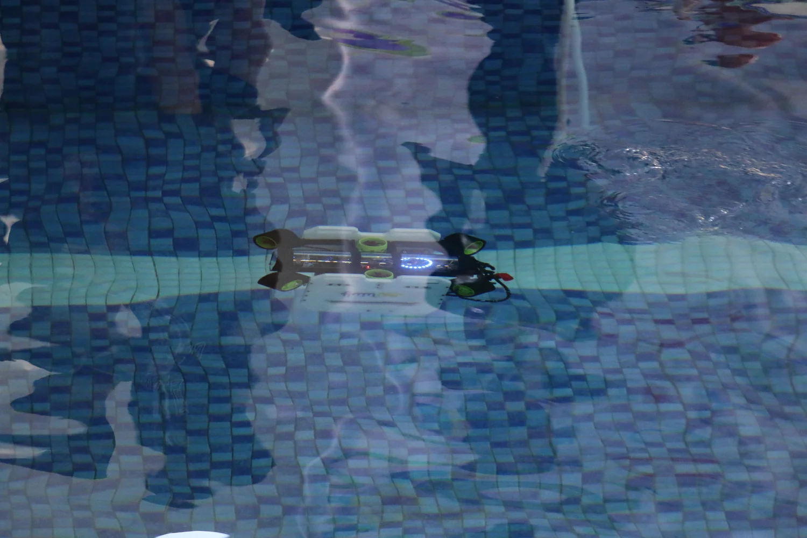
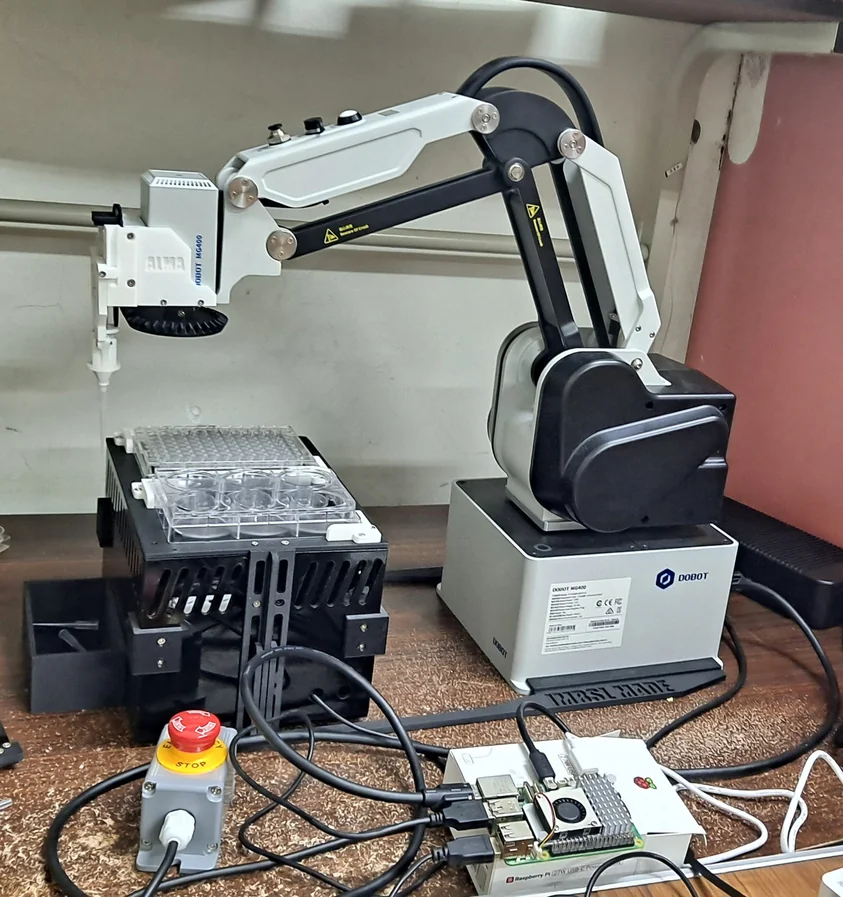
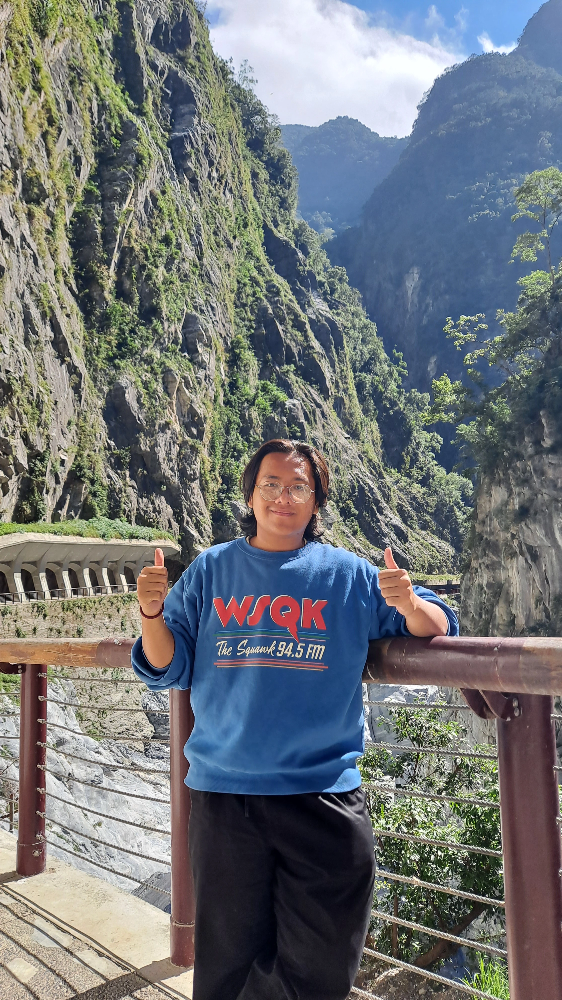
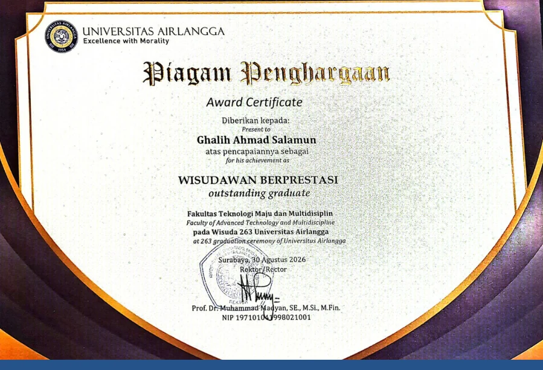
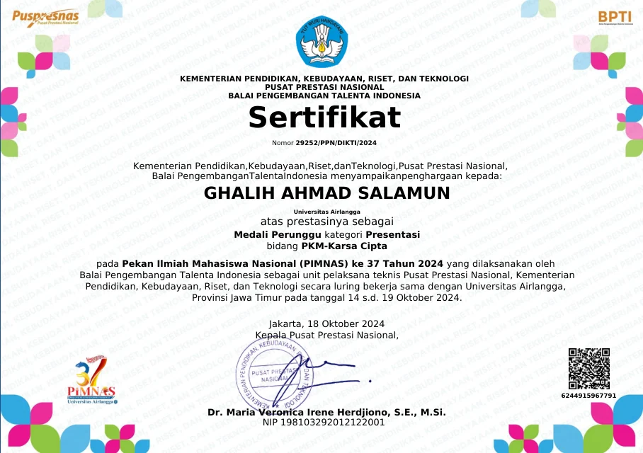
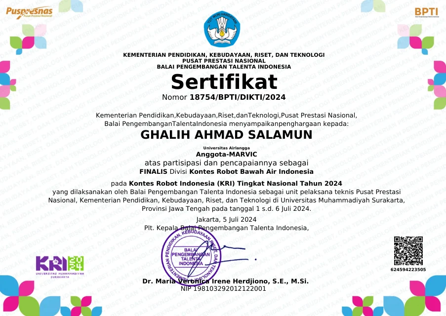
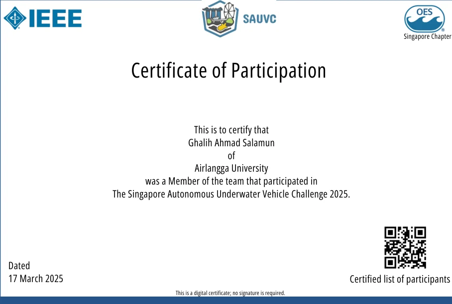

RESEARCH INTERN
Integrated Mechano-Biosystem Lab (IMBSL) · National Cheng Kung University
Developed vision-guided microtissue handling with DOBOT MG400 and a custom syringe end-effector.
ENGINEERING
Give me a concept and I'll build you a product.


INTRODUCING THE ENGINEER BEHIND THE WORK

I'm a Robotics and Artificial Intelligence Engineering graduate from Universitas Airlangga, recognized as the faculty's Most Outstanding Graduate. I work across mechanical design, underwater robotics, computer vision and robotic automation.
GET IN TOUCHMy documentations of projects througout the years. Click any project to explore the engineering behind it.
BUILD / LEARN / ITERATE.
Integrated Mechano-Biosystem Lab (IMBSL) · National Cheng Kung University
Developed vision-guided microtissue handling with DOBOT MG400 and a custom syringe end-effector.
MARE VICTOR · Universitas Airlangga
Designed, fabricated and integrated competition ROVs and AUVs.
Bachelor's Degree (GPA 3.21/4.00) · Universitas Airlangga
Graduated with the Faculty's Most Outstanding Graduate distinction.
Tools I am Familiar With.

2026 / ACADEMICUniversitas Airlangga

2024 / NATIONALPresentation · PKM-Karsa Cipta

2024 / NATIONAL9th place · Underwater Robotics

2025 / INTERNATIONAL21st among 45 teams
SELECTED ARTICLES AND FEATURES DOCUMENTING MY WORK AND ACHIEVEMENTS.
Coverage of my experience in IMBSL NCKU Taiwan.
READ ARTICLE FTMM UNAIR / MAR 2025Coverage of our participation in the SAUV Challenge 2025.
READ ARTICLE UNAIR NEWS / OCT 2024Coverage of our team's bronze medal at PIMNAS 37.
READ ARTICLE UNAIR NEWS / OCT 2024Featured coverage of the MOBIV prototype and its development team.
READ ARTICLE FTMM UNAIR / SEP 2023Interview about my role as project officer of ROTATION 2023.
READ ARTICLE